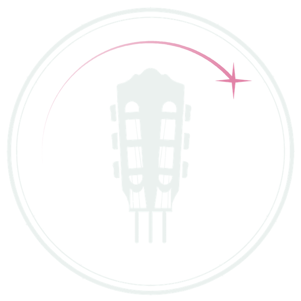

ノクテリエ
知っている曲を、ギターだけの合奏で。
ギターアンサンブル
Noctélie ノクテリエ
アルト・プライム・バス・ギタロンなど、音域の違うギターを重ねる合奏をしています。
SNSでは、パートが1つずつ重なっていく「曲当てクイズ」と、普通のギターで一緒に弾けるTAB譜を毎週公開しています。
音域の違うギター
メンバー
主宰 秋山嵐之輔
- 全日本ギターコンクール 独奏部門
- 2026年 第57回 第二位
2024年 第55回 努力賞
2022年 第三位 - JGA ギター合奏コンクール（山梨県立北杜高等学校）
- 2017年・2018年 金賞・審査員特別賞
2019年 金賞（バンドマスター） - 活動
- Noctélie（ギターアンサンブル）主宰・編曲
山梨県出身。中学3年でギターに出会う。山梨県立北杜高等学校でギター合奏に取り組み、JGA ギター合奏コンクールで3年連続金賞。
国際新堀芸術学院で学び、2024年にBグループのコンサートマスターを務める。2025年3月卒業。全日本ギターコンクール独奏部門で2026年に第二位。
現在は仲間とギターアンサンブル「Noctélie」を主宰し、アニメソングやJ-POPの合奏用編曲と演奏を手がけています。
個人ページへよくある質問
QNoctélie（ノクテリエ）とは何ですか？
音域の違うギターを重ねて演奏する、ギターだけの合奏グループです。主宰・編曲は秋山嵐之輔で、メンバーは5人です。
Qギターアンサンブル（ギター合奏）ってなんですか？
何人かのギター奏者が、メロディ・ハーモニー・低音などのパートに分かれて、1つの曲を一緒に演奏することです。1本のギターでは出せない、厚みのある響きになります。
Qどんな曲を演奏していますか？
アニメソングやJ-POPなど、多くの人が知っている曲です。合奏用の編曲は主宰の秋山嵐之輔が手がけています。
Q演奏はどこで見られますか？
Instagram・TikTok・YouTube の @ran.guitar_ensemble で見られます。パートが1つずつ重なっていく「曲当てクイズ」を毎週公開しています。
Qふつうのギターでも一緒に弾けますか？
はい。ふつうのギター（プライムギター）で弾けるTAB譜を、SNSで毎週公開しています。
Qどんな楽器を使っていますか？
ソプラノギター、アルトギター、プライムギター、プライムチェンバロギター、バスギター、ギタロンの6種類です。それぞれの形と調弦は、このページの「音域の違うギター」で紹介しています。
Q連絡するにはどうすればよいですか？
Instagram（@ran.guitar_ensemble）のメッセージからご連絡ください。
お問い合わせ
ご連絡は、Instagram のメッセージからお願いします。
Instagram へ